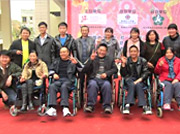

绵阳市残疾人康复中心与北川地震伤员同庆羌年
由香港康复会及中国项目支持，绵阳市残疾人康复中心、北川羌族自治县残疾人康复中心合办的“生命如歌，情满羌年”主题活动，在北川羌族自治县开幕。
青岛科技大学创科空间1分钟前
四川省商会信息平台新的管委会班子成立
5月22日，为完善信息平台管理体制，提升员工的整体实力，四川省商会信息平台召开全体会议，管委会主任张秉忠宣布任命唐子雯、陈瑶萍、高涵、陈强、王超为新一届管委会成员，主要负责信息平台大小事务。
青岛科技大学创科空间3分钟前
争做西部信息化建设先锋 改版信息平台以适用为主
管委会主任张秉忠听取报告并提出“争做西部信息化建设先锋 改版信息平台以适用为主”的构想。
青岛科技大学创科空间10分钟前
四川省工商联召开各市州工商联经济信息工作会议
4月25日上午，四川省工商联及各市州工商联代表齐聚一堂，召开工商联经济工作会议
青岛科技大学创科空间30分钟前
四川省商会信息平台新的管委会班子成立
5月22日，为完善信息平台管理体制，提升员工的整体实力，四川省商会信息平台召开全体会议，管委会主任张秉忠宣布任命唐子雯、陈瑶萍、高涵、陈强、王超为新一届管委会成员，主要负责信息平台大小事务。
青岛科技大学创科空间1小时前
争做西部信息化建设先锋 改版信息平台以适用为主
管委会主任张秉忠听取报告并提出“争做西部信息化建设先锋 改版信息平台以适用为主”的构想。
青岛科技大学创科空间3小时前
四川省工商联召开各市州工商联经济信息工作会议
4月25日上午，四川省工商联及各市州工商联代表齐聚一堂，召开工商联经济工作会议
青岛科技大学创科空间1天前
推荐阅读
音乐网站巨鲸面临“搁浅”：CEO陈戈称将向B2B转型 正考虑如何与微信合作
夏普否认与乐视合作开发超级电视 富士康或默许混淆宣传
阿里激进投资调查：蔡崇信主导 文化整合成隐忧
山寨手机商的新生存法则：借电商转型自主品牌

狙击苹果WWDC！三星拟6月20日在伦敦开发布会 新产品将密集出炉
热门文章
1奥巴马机密手机曝光 造价1800万美元百毒不侵
2035人转播
2联想如何用7年超越三星？新兴市场成胜负关键
1654人转播
3诺基亚起诉宏达电HTC One手机多项专利侵权
1555人转播
4榜单狂：用智能手机干的10件蠢事
1003人转播
5WWDC 2013倒计时：苹果应该发布的7款产品
800人转播